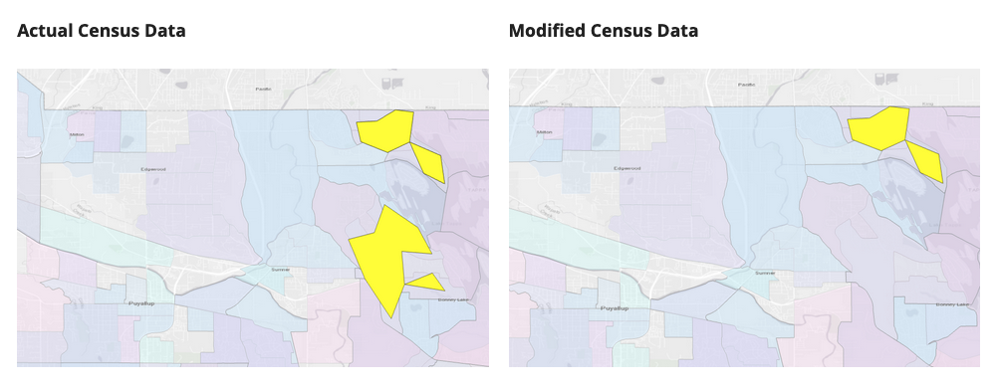

Modelling the Effect of a 10% Census Undercount
Please follow this link to the research

Leading a team of researchers, I modelled the effect of a Census undercount for the 2020 US Census. Please refer to the whitepaper and associated interactive visualizations at the UWT Center for Applied Urban Research. This research was used to inform advertising efforts in the local community to encourage residents to accurately and completely submit their census responses ahead of the 2020 US Census.